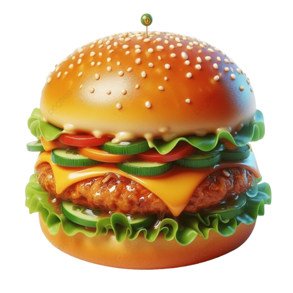
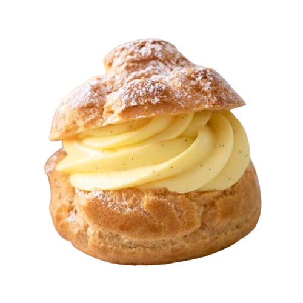
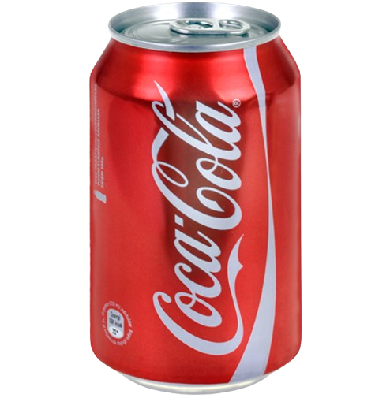

<ion-header>
  <ion-progress-bar type="indeterminate" color="dark"></ion-progress-bar>
  <ion-toolbar>
    <ion-title style="margin-top: -5%;">
      <h4 class="h4homeas">เลือกประเภทเมนู</h4>
    </ion-title>
    <ion-button class="logout" *ngIf="isAdmin" style="display: flex; flex-direction: column; align-items: center; height: 40px; width: 63px; margin-left: 75%; margin-top: -15%;" color="danger" expand="block" (click)="logout()">LOGOUT</ion-button>
    <ion-buttons slot="start">
      <ion-button expand="full" (click)="goBack()">ย้อนกลับ</ion-button>
    </ion-buttons>
  </ion-toolbar>
</ion-header>

<ion-content class="custom-background">
  <div class="menu-selection-container">
    <!-- อาหารคาว -->
    <div class="menu-item">
      
      <div class="menu-label">อาหารคาว</div>
    </div>

    <!-- อาหารหวาน -->
    <div class="menu-item">
      
      <div class="menu-label">อาหารหวาน</div>
    </div>
  </div>

  <div class="menu-selection-container">
    <!-- เครื่องดื่ม -->
    <div style="margin-top: -20%;" class="menu-item">
      
      <div class="menu-label">เครื่องดื่ม</div>
    </div>
  </div>
</ion-content>
